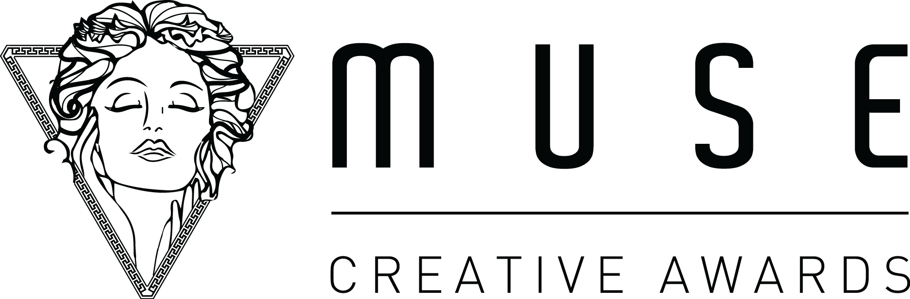

2026 Silver WinnerAdoption is a promise.
An animal's life doesn't end at adoption.
It begins there.
But what happens after adoption?
For many shelters, adoption is where visibility ends. Once an animal leaves, there is no simple way to know how life at home is really going.
A Platform for Responsible Pet Adoption
A connected system that helps shelters and adopters stay engaged after adoption—through weekly check-ins, community support, and continuous monitoring—ensuring every pet is cared for beyond the moment they go home.
What shelters need to know
- Are they safe?
- Are they adjusting?
- Are they receiving the right care?

Beyond Adoption, Toward a Better Life


When Care Needs Action
Not every situation resolves on its own. When check-ins are missed or risks are detected, cases are surfaced, assigned, and followed through—ensuring timely intervention when a pet may need more than passive monitoring.
Guidance That Can Be Trusted
Every question reflects an owner trying to do better. The system ensures no concern goes unanswered—and flags potentially harmful advice—so that support remains accurate, safe, and grounded in real care.

A Simple App for Every Adopted Pet
After adoption, every owner joins the journey through a dedicated app—sharing weekly updates with photos and small moments, connecting with other pet owners, and asking questions along the way. Behind it, shelters stay gently connected, helping ensure each pet continues to grow in a safe and caring home.


Every pet deserves more than a home.
They deserve to be seen, cared for, and supported—every week, long after adoption.